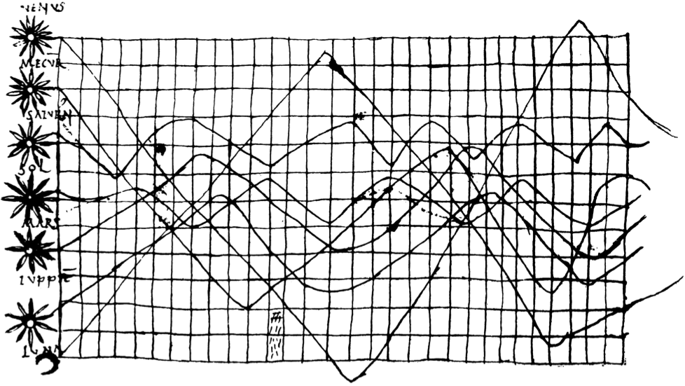

1 Introduction générale
Alain Quartier-la-Tente ![]()
Une série chronologique ou série temporelle est une suite de valeurs numériques ordonnées dans le temps qui permet d’analyser l’évolution d’une variable au fil du temps. Les séries chronologiques sont utilisées dans de nombreux domaines : économie, finance, météorologie, astronomie, musique… Par exemple, le plus ancien diagramme temporel connu du monde occidental (selon Kendall 1973), reproduit par Funkhouser (1936), daterait du Xe siècle et serait une représentation de l’inclinaison des orbites des planètes en fonction du temps qui proviendrait du Commentaire au Songe de Scipion de Macrobe (figure 1.1). Ce diagramme montre des schémas qui semblent se répéter (variations à la hausse et à la baisse à intervalles réguliers), mais ce n’est que bien plus tard, aux XVIIIe et XIXe siècles, que les techniques mathématiques permettront l’analyse des séries chronologiques, notamment grâce à l’approche fréquentielle.
L’analyse fréquentielle (ou analyse harmonique) naît grâce à la contribution de Fourier (1822) qui établit que toute fonction du temps peut être décomposée en une somme de termes périodiques exprimés par des fonctions sinusoïdales et cosinusoïdales. Avec le développement du périodogramme, Schuster (1898) montre comment, à partir de la décomposition précédente, on peut mettre en évidence des phénomènes qui se répètent à intervalles réguliers : il montre alors qu’il y a un phénomène cyclique dans les taches solaires. Vingt ans plus tard, Persons (1919) propose une approche globale de décomposition des séries temporelles en quatre composantes inobservables : tendancielle, cyclique, saisonnière et résiduelle (ou irrégulière). Ces quatre composantes sont décrites de la façon suivante :
Une tendance de long terme ou tendance séculaire qui correspond à l’augmentation ou diminution régulière de la série. Elle peut également être appelée l’élément de croissance.
Un mouvement ondulatoire ou cyclique qui se superpose à la tendance de long terme, dont les pics sont atteints durant les périodes de prospérité industrielle et les creux pendant les périodes de dépression, constituant ainsi le cycle des affaires.
Un mouvement saisonnier infra-annuel qui doit être systématique d’une année à l’autre.
Des variations résiduelles ou irrégulières affectant des séries particulières ou des évènements majeurs, tels que des guerres ou des catastrophes nationales, affectant plusieurs séries simultanément. Ces variations peuvent aussi provenir d’une grève, de tempêtes ou d’inondations inhabituelles, d’une décision de justice affectant les transactions boursières, etc.
Du fait de la difficulté de séparer la tendance de long terme et le cycle de court terme, la solution utilisée dans les méthodes de désaisonnalisation (dont l’objectif est d’estimer la composante saisonnière afin de la supprimer) est d’estimer ces deux composantes conjointement : on parle alors de composante tendance-cycle. En effet, ces composantes étant inobservables, il n’existe pas de définition unique puisque le concept de « long terme » est relatif (comment différencier un cycle long de la tendance de long terme ?). De façon similaire, comme souligné par Persons (1919), il est également difficile de séparer un cycle court de l’irrégulier. Par ailleurs, les méthodes de construction des séries chronologiques sont périodiquement révisées pour tenir compte des évolutions économiques et sociales : le concept de tendance de long terme peut ainsi perdre de son importance. Par exemple, dans le cadre des enquêtes de conjoncture de l’Insee, la formulation des questions a pu évoluer au cours du temps pour une harmonisation européenne (c’est par exemple le cas de la question sur le taux d’utilisation des capacités de production en 2004 dans l’enquête de conjoncture dans l’industrie), l’enquête de conjoncture dans les services n’est mensuelle que depuis 2000 et il n’y avait pas d’enquête de conjoncture en août avant 2008. Les différentes classifications des produits et des entreprises ont également pu évoluer avec les révisions des différentes nomenclatures. Enfin, séparer la tendance de long terme et le cycle de court terme nécessite d’avoir des séries longues alors que les méthodes de désaisonnalisation peuvent également s’appliquer sur des séries courtes (le logiciel X-13-ARIMA-SEATS peut s’utiliser dès que l’on a 3 ans de données). La tendance-cycle peut donc également être qualifiée de « tendance de court terme ».
Pour l’estimation des différentes composantes, l’utilisation de moyennes mobiles (ou filtres linéaires) a rapidement été répandue1, avec notamment Poynting (1884) qui suggère l’utilisation de moyennes mobiles arithmétiques pour réduire les variations résiduelles et Spencer (1904) qui propose l’utilisation de moyennes mobiles spécifiques pour lisser les taux de mortalité. Quelques années plus tard, Henderson (1916) propose des moyennes mobiles, encore utilisées aujourd’hui, maximisant un critère « lissage » (smoothness) de la série, sous contrainte de préservation de polynômes de degré 2. Il montre également que le lissage par polynômes locaux est équivalent à l’application de moyennes mobiles et donne les conditions pour que la réciproque soit vérifiée. Tous ces travaux ont conduit au développement d’un premier programme de désaisonnalisation basé sur les moyennes mobiles (voir notamment Shiskin 1957), appelé « Census Method I ». Cette méthode a fait l’objet de nombreuses variantes jusqu’à aboutir à la méthode de désaisonnalisation X-11 (pour une description complète de cette méthode voir notamment Ladiray et Quenneville 2011). Cette dernière est encore utilisée aujourd’hui puisqu’elle constitue le cœur de la méthode de décomposition de l’algorithme X-13-ARIMA-SEATS2 (Monsell 2007), qui est officiellement recommandée, avec la méthode paramétrique TRAMO-SEATS, par Eurostat et la Banque Centrale Européenne pour la désaisonnalisation des séries temporelles économiques.
De manière générale, pour les estimations finales, des moyennes mobiles symétriques sont utilisées : c’est-à-dire que pour estimer une composante à la date \(t\), on utilise autant de point dans le passé (avant \(t\)) et dans le futur (après \(t\)) et que le même poids est donné aux observations passées et futures. Ces moyennes mobiles symétriques ont notamment l’avantage de ne pas créer de déphasage : il n’y a pas de décalage dans la détection des points de retournements3. Toutefois, pour l’estimation en temps réel, les points futurs n’étant pas encore connus, il n’est pas possible de s’appuyer sur des moyennes mobiles symétriques. Une première solution consiste à étendre la série pour ensuite appliquer une moyenne mobile symétrique. Cette solution semble remonter à De Forest (1877) qui suggère également de modéliser, en fin de période, une tendance polynomiale de degré au plus trois4. Une seconde solution consiste à utiliser des moyennes mobiles asymétriques (c’est-à-dire que pour l’estimation d’une composante à la date \(t\), on n’utilise pas autant de points avant \(t\) et après \(t\)) pour prendre en compte le manque de données disponibles. Les prévisions étant des combinaisons linéaires de valeurs passées, ces deux méthodes sont in fine équivalentes. La première solution revient donc à appliquer des moyennes mobiles asymétriques dont les coefficients sont obtenus par minimisation de l’erreur quadratique moyenne de révision entre la première et dernière estimation puisque c’est le critère généralement utilisé dans les modèles de prévision. En fonction du cas d’usage, il peut donc être préférable d’utiliser des moyennes mobiles asymétriques spécifiques construites pour minimiser d’autres critères (comme le délai dans la détection de points de retournements). Dans certains cas, une approche hybride peut être utilisée : pour la désaisonnalisation de séries mensuelles, le filtre final de X-13-ARIMA-SEATS permettant d’extraire la composante saisonnière utilise, dans la majorité des cas, 7 ans de données dans le passé et dans le futur. Pour un horizon aussi grand, les prévisions ne sont généralement pas fiables. C’est pourquoi la méthode de désaisonnalisation X-13ARIMA-SEATS ne prolonge la série que de 1 an et utilise, en fin de période, des moyennes mobiles asymétriques spécifiques. En particulier, pour l’estimation de la tendance-cycle, les moyennes mobiles asymétriques associées aux moyennes mobiles de Henderson sont celles définies par Musgrave (1964).
Pour analyser les variations de court terme et les cycles économiques, une pratique courante était d’étudier les séries brutes en glissement annuel. Cette méthode est à proscrire car cela n’élimine pas tous les effets saisonniers. Par exemple, certains jours fériés, comme par Pâques, ne tombent pas le même jour, voire le même mois chaque année : si la date de ce jour influence la série étudiée, l’analyse en glissement annuel peut être trompeuse.
De façon similaire, l’analyse en glissement annuel ne tient pas compte des effets de jours ouvrables. Par exemple, la production de nombreuses entreprises est plus faible le samedi et le dimanche qu’en semaine. En 2023, le mois de mars contenait 8 samedis et dimanche alors qu’en 2024 il en contenait 10 : la simple analyse en glissement annuel ne tient pas compte de ces différences et pourrait donc conduire à une analyse erronée des variations.
Enfin, même lorsque les séries ne présentent aucun effet de calendrier, l’analyse en glissement annuel peut poser problème. D’une part, elle peut induire en erreur lorsque la composante irrégulière est importante (une valeur particulière est observée à une période donnée, par exemple pendant le COVID-19). D’autre part, les points de retournements (point à partir duquel une série croissante commence à décroître ou une série décroissante commence à croître) sont détectés avec retard en utilisant les glissements annuels (le risque est de ne pas voir les points de retournement sur l’année en cours). Par exemple, si la série brute est plus élevée en mars 2024 qu’en mars 2023, l’analyse en glissement annuel pourrait amener à conclure que l’activité a augmenté au cours de l’année alors qu’elle pourrait avoir augmenté jusqu’en septembre 2023 puis commencé à diminuer progressivement.
Toutes ces raisons font que la majorité des instituts statistiques publient des séries désaisonnalisées : on parle alors de séries corrigées des variations saisonnières et corrigées des jours ouvrables (CVS-CJO).
Par construction, la désaisonnalisation laisse l’effet conjoint de la tendance-cycle et de l’irrégulier. Lorsque la variabilité de la série est importante (i.e., lorsque l’irrégulier est important), il peut être difficile, à partir de la série CVS-CJO, de déterminer la direction de la tendance de court terme et d’évaluer la présence de points de retournement. Dans ce cas, il peut être utile de lisser la série CVS-CJO afin de retirer l’irrégulier et d’estimer la composante tendance-cycle. Estimer et publier la tendance-cycle, en plus de la série désaisonnalisée, présente de nombreux avantages :
Réduire le risque que les utilisateurs tirent des conclusions inappropriées sur la base de mouvements liés à l’irrégulier.
Permettre une comparaison appropriée dans le temps en réduisant l’impact des évènements ponctuels.
Améliorer la compréhension et la détection des points de retournement.
Même si les méthodes de désaisonnalisation fournissent directement des estimations de la tendance-cycle, les rares instituts publiant régulièrement cette composante, Statistique Canada et Australian Bureau of Statistics, appliquent plutôt des moyennes mobiles à la série CVS-CJO (Picard et Matthews 2016, ; Australian Bureau of Statistics 2003). Cela a notamment l’avantage de simplifier le processus d’estimation de cette composante puisqu’il suffit de communiquer les coefficients des moyennes mobiles utilisées pour reproduire les résultats.
L’objectif de cette thèse, composée de quatre articles, est d’étudier et de comparer différentes méthodes de construction de moyennes mobiles asymétriques permettant l’estimation en temps réel de la tendance-cycle. L’intérêt est donc porté sur les estimations intermédiaires (i.e., lorsque des moyennes mobiles asymétriques doivent être utilisées, faute d’observations futures connues) plutôt que sur les estimations finales (i.e., lorsque des moyennes mobiles symétriques peuvent être utilisées). Tout d’abord, différentes méthodes récemment développées pour la construction de moyennes mobiles pour l’estimation de la tendance-cycle sont étudiées et comparées. Puis, nous montrons notamment comment la moyenne asymétrique de Musgrave (utilisée dans X-13-ARIMA-SEATS) peut être paramétrée localement afin de réduire les révisions et le délai de détection des points de retournement. Ensuite, nous étudions l’impact des points atypiques sur l’estimation de la tendance-cycle et montrons comment les moyennes mobiles de Henderson et de Musgrave peuvent être étendues afin de modéliser ces chocs et ainsi réduire les révisions et mieux modéliser les points de retournement. Enfin, nous discutons des recommandations pour la mise en production de la composante tendance-cycle et de la façon de mettre en place une chaîne de production, en l’appliquant à une dizaine de publications de l’Insee.
Estimation de la tendance-cycle et formule générale de construction des moyennes mobiles
Ce premier article décrit et compare différentes approches récemment développées pour la construction de moyennes mobiles pour l’estimation de la tendance-cycle. Trois approches sont étudiées et comparées :
Moyennes mobiles obtenues grâce à l’approximation polynomiale locale (Proietti et Luati 2008, ; Gray et Thomson 1996).
Moyennes mobiles obtenues en utilisant la théorie des espaces de Hilbert à noyau reproduisant (RKHS, Dagum et Bianconcini 2008).
L’approche Fidelity-Smoothness-Timeliness (FST, Grun-Rehomme, Guggemos, et Ladiray 2018) sur une optimisation d’une somme pondérée de critères de qualités des moyennes mobiles.
Une quatrième approche, l’approche Accuracy, Timeliness, Smoothness (ATS, Wildi et McElroy 2019), est également décrite mais n’est pas comparées aux autres. En effet, celle-ci dépendant totalement des données, elle peut donc, contrairement aux autres méthodes, plus difficilement s’intégrer dans la logique des algorithmes non-paramétriques tels que X-11 qui s’appuient sur des moyennes mobiles.
Bien que toutes ces méthodes aient été présentées avec des approches générales de construction des moyennes mobiles (elles permettent par exemple toutes de reproduire la moyenne mobile de Henderson), leurs propriétés théoriques et leurs performances empiriques n’ont jamais été comparées.
La comparaison théorique des méthodes est réalisée en développant une formulation générale de construction des moyennes mobiles, permettant de mettre en évidence les équivalences entre les différentes méthodes.
Les méthodes polynomiales ont l’avantage d’être simples et facilement compréhensibles. Elles peuvent également prendre en compte des problèmes complexes (comme l’autocorrélation induite par l’utilisation d’un plan de sondage rotatif avec une période de recouvrement). En revanche, l’inconvénient est que le déphasage ne peut pas être contrôlé (ce qui peut introduire des délais plus importants dans la détection des points de retournement). Cette étude propose également deux extensions de ces méthodes polynomiales qui seront davantage mises en avant dans le deuxième article de cette thèse.
Concernant les autres approches étudiées, les RKHS permettent de construire facilement des filtres adaptés à toutes les fréquences (y compris des fréquences irrégulières) mais ont notamment l’inconvénient d’être numériquement instables (des problèmes d’optimisation peuvent apparaître).
La méthode FST a l’avantage d’être analytiquement soluble mais a l’inconvénient d’être plus difficilement paramétrisable car les différents critères utilisés ne sont pas normalisés : les poids associés aux différents critères n’ont donc pas de sens.
Les estimations de tendance-cycle issues de ces méthodes sont également comparées empiriquement sur des séries mensuelles, simulées et réelles, selon deux critères :
Le déphasage. Celui-ci est habituellement défini comme le nombre de mois nécessaires pour détecter un point de retournement. Cette définition a l’inconvénient de ne pas prendre en compte les cas où il y aurait des révisions dans la détection du point de retournement lors des estimations intermédiaires successives (ce qui peut être notamment le cas avec filtres issus des RKHS) ou lorsque le point de retournement est détecté lors des estimations intermédiaires mais pas avec l’estimation finale (avec une moyenne mobile symétrique). Le déphasage est donc défini dans cet article comme le nombre de mois nécessaires pour détecter un point de retournement sans révision future.
En minimisant le déphasage sur des séries simulées, ce critère est également utilisé pour obtenir des poids associés aux différents critères de la méthode FST.Les révisions. Celles-ci sont mesurées par rapport à la dernière estimation finale mais également entre deux estimations intermédiaires successives. Cela permet de mettre en évidence des sous-optimalités dans certaines méthodes lorsque l’on se rapproche de l’estimation finale (par exemple avec filtres issus des RKHS ou lorsque l’on applique une moyenne mobile symétrique sur une série prolongée).
Cet article s’accompagne d’un package R, rjd3filters, permettant de facilement mettre en œuvre les différentes méthodes et reproduire les résultats.
Amélioration des estimations de tendance-cycle grâce à la paramétrisation locale des filtres de régression polynomiale
La régression polynomiale locale permet de reproduire la moyenne mobile symétrique de Henderson et les moyennes mobiles asymétriques de Musgrave, utilisées dans l’algorithme de désaisonnalisation X-13ARIMA-SEATS. Ce deuxième article se concentre deux extensions de ces méthodes :
En ajoutant un critère permettant de contrôler le déphasage, grâce au critère de Timeliness de la méthode FST. Le poids associé à ce critère devant être défini par l’utilisateur et étant difficilement paramétrisable (car le critère utilisé n’est pas normalisé), cette extension n’est pas étudiée empiriquement dans cet article mais uniquement de manière théorique.
En proposant une procédure permettant de paramétrer localement les moyennes mobiles asymétriques. Les moyennes mobiles asymétriques sont en effet construites en utilisant un compromis biais-variance et dépendent d’un paramètre, associé au biais, devant être défini par l’utilisateur. Par exemple, les moyennes mobiles de Musgrave modélisent une tendance locale de degré 1 et reproduisent sans biais les constantes : le paramètre à définir correspond au rapport entre le coefficient associé à la pente et l’écart-type du résidu de la régression locale. Ce paramètre est généralement défini globalement (i.e., le paramètre est constant pour toutes les moyennes mobiles). Par exemple, dans X-13ARIMA-SEATS, ce paramètre ne dépend que de la longueur de la moyenne mobile de Henderson. Cette hypothèse n’est cependant pas plausible pour les estimations en temps réel et notamment autour des points de retournement (lors desquels la pente tend vers 0).
La comparaison des estimations en temps réel de la tendance-cycle sur des séries mensuelles simulées et réelles montre que cette seconde extension permet de réduire le délai de la détection des points de retournement et que, même lorsque les délais ne sont pas réduits, elle permet de réduire les révisions. Sur des séries trimestrielles, la fenêtre des moyennes mobiles étant réduite (i.e., moins de points sont utilisés pour l’estimation), les différentes méthodes de construction de moyennes mobiles asymétriques donnent des résultats similaires.
Toutefois, l’analyse des résultats sur des périodes à fortes turbulences, comme durant le COVID-19, montre que les estimations de la tendance-cycle peuvent être fortement biaisées par la présence de points atypiques importants, pouvant conduire à une détection erronée des points de retournement (dans le cadre du COVID-19, pic détecté trop tôt). Cela suggère donc de prendre en compte les points atypiques lorsque l’irrégulier est important.
Estimation de la tendance-cycle avec des méthodes robustes aux points atypiques
Comme tout opérateur linéaire, les moyennes mobiles sont fortement sensibles à la présence de points atypiques. C’est pourquoi la méthode de désaisonnalisation X-13ARIMA-SEATS possède deux modules de correction des points atypiques :
Un module de pré-ajustement où la série initiale est notamment corrigée des ruptures en niveau (affectant la tendance-cycle) et des chocs ponctuels (affectant l’irrégulier) mais aussi d’autres formes de ruptures (changements transitoires, ruptures de saisonnalité, etc.).
Cette série pré-ajustée est ensuite décomposée avec la méthode X-11, qui aussi possède un algorithme de correction des chocs ponctuels.
Lorsque la série est affectée par des chocs importants l’application directe de moyennes mobiles pour l’estimation de la tendance-cycle peut donc conduire à des estimations biaisées et à un diagnostic conjoncturel faussé (par exemple points de retournement détectés à la mauvaise date). C’est notamment pourquoi Statistique Canada et l’Australian Bureau of Statistics ont arrêté la publication de la composante tendance-cycle durant la crise du COVID-19.
L’objectif de cette étude est d’étudier et de comparer différentes approches permettant l’extraction de tendance-cycle en temps-réel. Nous décrivons également construction des moyennes mobiles linéaires, associées aux moyennes mobiles de Henderson et de Musgrave, qui prennent en compte des informations extérieures, permettant notamment de modéliser des chocs et donc de les rendre robustes à ces derniers. Cela permet notamment de correctement modéliser les points de retournements autour des chocs (par exemple durant le COVID-19) et de réduire les révisions. Cette étude montre comment construire des intervalles de confiance pour les estimations basées sur des moyennes mobiles et ainsi valider l’hypothèse retenue sur la modélisation de chocs. Ces moyennes mobiles sont également comparées à des méthodes non-linéaires robustes.
Et si l’on publiait la tendance-cycle ?
Qu’est-ce que la composante tendance-cycle ? Quel est l’intérêt de publier cette composante ? Comment l’estimer ? Quels sont les instituts qui publient cette composante et quelles méthodes utilisent-ils ? Y a-t-il des recommandations pour la publication de cette composante ? Comment concrètement mettre en place une chaîne de production de cette composante ? C’est à toutes ces questions que répond ce quatrième article.
Seuls deux instituts statistiques publient régulièrement la composante tendance-cycle : Statistique Canada et l’Australian Bureau of Statistics. Pour cela, ces deux instituts appliquent des moyennes mobiles à la série désaisonnalisée et corrigée des jours ouvrables (CVS-CJO) : les cascade linear filter (CLF) pour Statistique Canada (en utilisant la méthode « couper-et-normaliser » pour les estimations en temps réel) et la moyenne mobile de Henderson pour l’Australian Bureau of Statistics (en utilisant les moyennes mobiles de Musgrave pour les estimations en temps réel). Cette publication se fait conjointement aux séries CVS-CJO (et non en remplacement) et a de nombreux avantages, en particulier :
Réduire le risque que les utilisateurs tirent des conclusions inappropriées en période de forte volatilité en leur permettant de distinguer les évolutions expliquées par l’irrégulier de celles de la tendance-cycle.
Améliorer la compréhension et la détection des points de retournement.
Cet article décrit plusieurs recommandations de représentation de la tendance-cycle permettant de mettre en évidence l’incertitude autour des dernières estimations (intervalles de confiance, prévisions implicites) ou de mettre en évidence les points de retournement. Il montre comment mettre en place ces recommandations grâce au package R publishTC accompagnant cette étude. Celui-ci permet également de facilement reproduire les méthodes d’estimation de la tendance-cycle utilisées par Statistique Canada et l’Australian Bureau of Statistics, ainsi que les extensions des moyennes mobiles de Henderson/Musgrave proposées dans cette thèse :
Paramétrisation locale des moyennes mobiles asymétriques de Musgrave ;
Prise en compte des ruptures de niveau et des chocs ponctuels ;
Combinaison des deux extensions précédentes.
L’étude explique également comment mettre en place une production automatique de la composante tendance-cycle, grâce à la création de rapports automatisés. La maquette de production mise en place dans étude est appliquée à une dizaine de publications de l’Insee (environ 80 séries).
Mais il ne s’agissait pas de l’unique méthode utilisée : on peut également citer des méthodes basées sur les médianes ou des régressions, comme notamment décrit par Persons.↩︎
Cet algorithme fonctionne en deux temps. Dans un premier temps, la série est pré-ajustée de plusieurs non-linéarités grâce à un modèle Reg-ARIMA (correction de points atypiques, de ruptures, des effets jours ouvrables non saisonniers, des effets fêtes mobiles, etc.). Dans un second temps, cette série linéarisée est décomposée grâce à la méthode X-11.↩︎
On parle de point de retournement lorsque l’on passe d’une phase de récession (diminutions successives) à une phase d’expansion de l’économie (augmentations successives) : on parle alors de redressement ou, dans le cas contraire, de ralentissement. Dans le cadre de l’analyse de la tendance-cycle, ces points de retournement sont associés au cycle classique (également appelé cycle des affaires) : voir Ferrara (2009) pour une description des différents cycles économiques.↩︎
« As the first \(m\) and last \(m\) terms of the series cannot be reached directly by the formula, the series should be graphically extended by m terms at both ends, first plotting the observations on paper as ordinates, and then extending the curve along what seems to be its probable course, and measuring the ordinates of the extended portions. It is not necessary that this extension should coincide with what would be the true course of the curve in those parts. The important point is that the \(m\) terms thus added, taken together with the \(m+1\) adjacent given terms, should follow a curve whose form is approximately algebraic and of a degree not higher than the third. »↩︎